Manual de usuario y evidencia funcional
Introduccion
QualiReq es una aplicacion web para la revision de calidad de requisitos de software y la generacion trazada de casos de prueba. El motor de analisis es determinista: evalua cada requisito contra un catalogo de 15 reglas y produce correcciones automaticas, puntuacion de calidad y casos de prueba derivados de las restricciones verificables encontradas.
Este documento sirve como manual de uso y como evidencia de funcionamiento. Cada seccion incluye una captura de pantalla tomada automaticamente mediante pruebas E2E (Playwright) sobre la aplicacion en ejecucion.
Inicio de sesion
La pantalla de login permite el acceso con correo y contrasena. En modo de desarrollo local, la autenticacion se simula y el usuario es redirigido automaticamente a la pagina principal.

Pagina principal
Al ingresar, el usuario ve un saludo personalizado, dos tarjetas informativas sobre las funcionalidades principales (revisor y generador de casos), y la lista de proyectos existentes. Cada tarjeta de proyecto muestra el anillo de calidad, la version actual, la cantidad de requisitos, sospechas y casos generados. El buscador filtra proyectos por nombre en tiempo real.
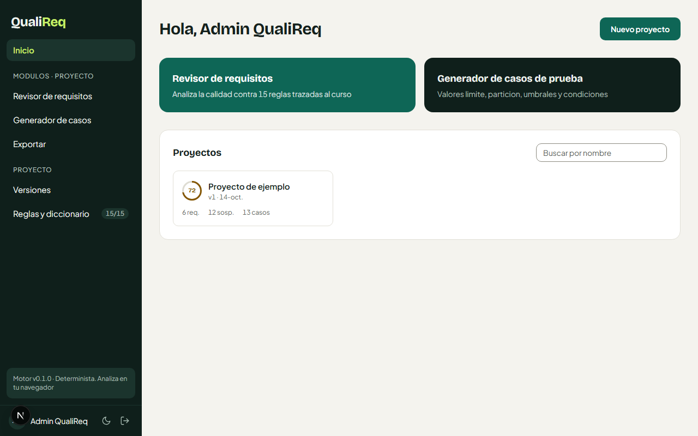
Crear proyecto
El boton "Nuevo proyecto" despliega un formulario inline para crear un proyecto. El usuario escribe el nombre y hace clic en "Crear". El formulario se puede cancelar para volver al estado anterior sin efectos secundarios.
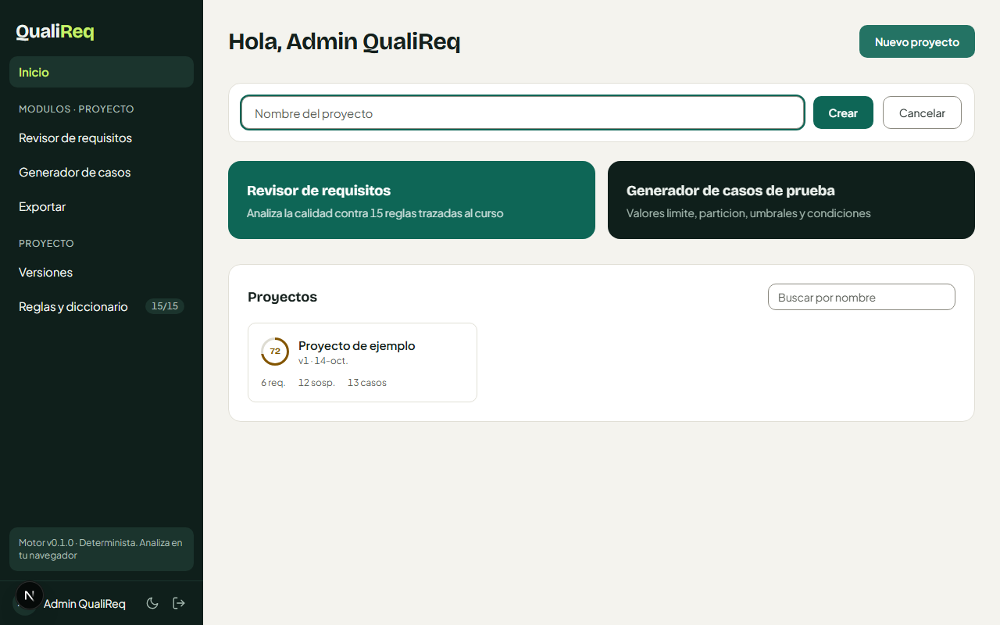
Revisor de requisitos (estado inicial)
El modulo de revision presenta un area de texto con numeros de linea e indicadores de calidad por requisito. La guia visual muestra la estructura esperada de un requisito: [lugar/tiempo/evento] + debe + accion + sujeto + resultado. Los botones permiten cargar un ejemplo predefinido, subir un archivo o limpiar el contenido.
Carga del ejemplo
Al hacer clic en "Cargar ejemplo", se insertan 6 requisitos de prueba (RF-01 a RF-04, RNF-01 y RNF-02) que cubren diferentes tipos y niveles de calidad. Cada linea muestra un indicador de color segun su estado: verde indica un requisito sin sospechas, gris indica que aun no ha sido analizado. El boton "Analizar" ejecuta el motor contra el texto actual.
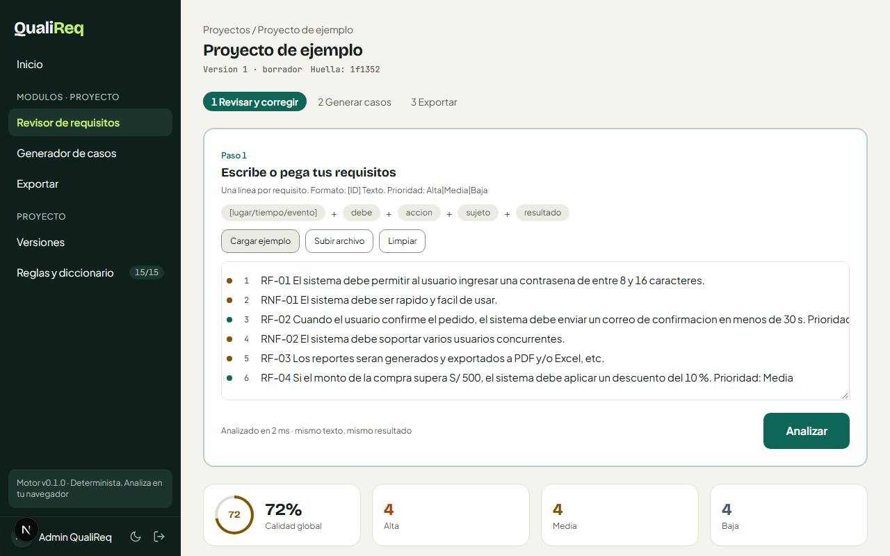
Resultado del analisis
Tras ejecutar el analisis, aparece el resumen con el anillo de calidad global (72%) y los contadores por severidad: 4 hallazgos de severidad alta, 4 media y 4 baja. El motor analiza en milisegundos y garantiza que el mismo texto produce siempre el mismo resultado (huella determinista).
Sospechas y correcciones
La vista detallada muestra la lista de requisitos con su puntuacion individual a la izquierda, y las sospechas con correcciones propuestas a la derecha. Cada sospecha identifica la regla infringida, explica el problema y ofrece una correccion que el usuario puede aplicar individualmente o en lote con "Aplicar todas las correcciones". El boton "Falso positivo" permite descartar una sospecha si el usuario la considera incorrecta.
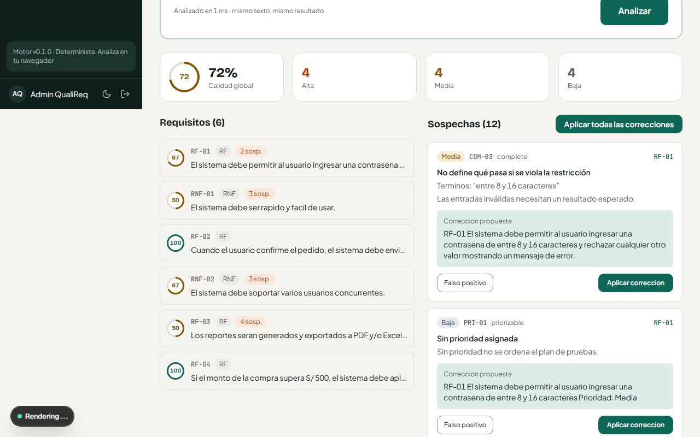
Vista completa del analisis
La vista completa en scroll muestra todos los elementos del analisis: el resumen de calidad, los 6 requisitos con sus puntuaciones individuales (RF-02 y RF-04 obtienen 100, RF-01 y RNF-01 obtienen 67, RNF-02 obtiene 67, RF-03 obtiene 50), y todas las sospechas con sus correcciones propuestas. Los pasos de navegacion (1 Revisar, 2 Generar, 3 Exportar) permiten avanzar en el flujo de trabajo.
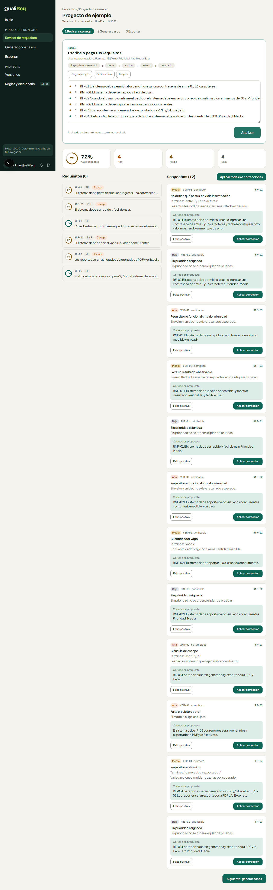
Generador de casos: vista tabla
El paso 2 genera automaticamente casos de prueba a partir de los requisitos con restricciones verificables. Para el ejemplo, se generan 13 casos a partir de 3 requisitos (RF-01, RF-02 y RF-04). Cada requisito muestra una linea numerica con los valores de prueba. La tabla detalla el ID del caso, el requisito asociado, el tipo (valido, invalido, limite, no funcional), la tecnica utilizada (BVA, EP, umbral, condicion), el dato de prueba, el resultado esperado y la prioridad. Un selector permite filtrar por requisito.
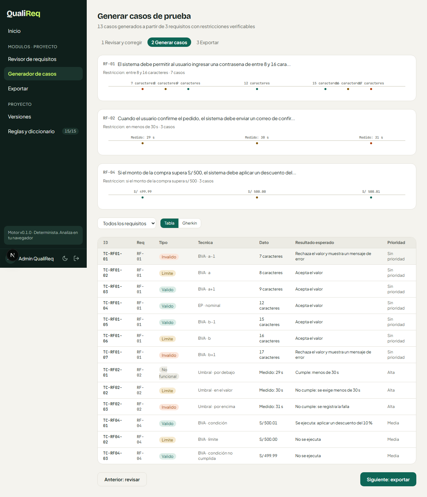
Generador de casos: vista Gherkin
La vista alternativa muestra los mismos casos de prueba en formato Gherkin (Given/When/Then), listos para integrarse con herramientas de BDD como Cucumber. El toggle Tabla/Gherkin permite cambiar entre ambas vistas sin perder el estado. Cada Feature agrupa los escenarios por requisito de origen.
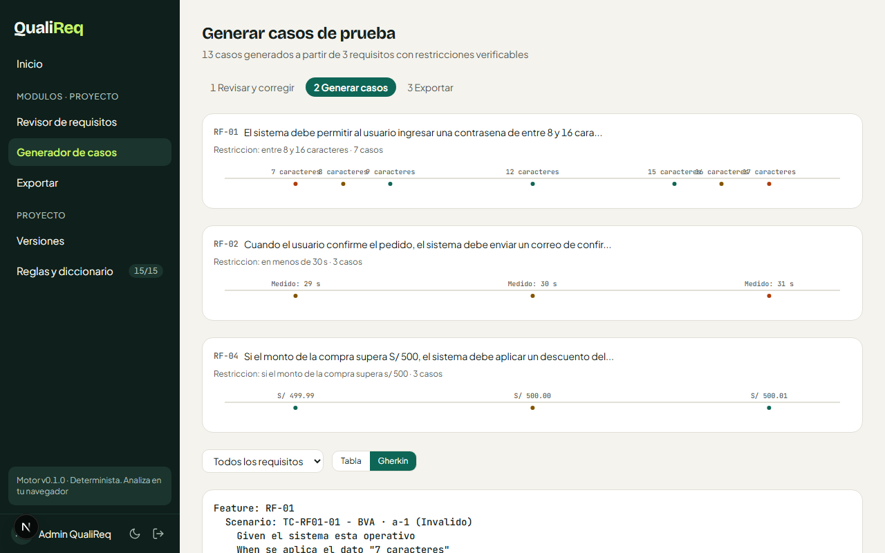
Exportar resultados
El paso 3 permite exportar los resultados en 11 formatos organizados en tres grupos: requisitos mejorados (TXT, Markdown, CSV, JSON), casos de prueba (CSV, Markdown, JSON, Gherkin) y sospechas (CSV, Markdown, JSON). El panel de vista previa muestra el contenido del formato seleccionado. Los botones permiten copiar al portapapeles o descargar el archivo directamente.
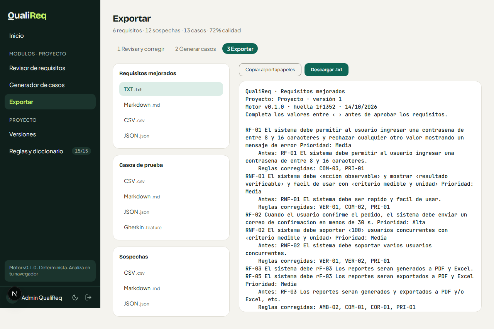
Historial de versiones
El modulo de versiones permite guardar el estado actual del borrador como una version inmutable con una nota opcional. Cada version registra la cantidad de requisitos, el porcentaje de calidad y la fecha. Las versiones anteriores se pueden restaurar o comparar con la actual usando un diff visual palabra por palabra.
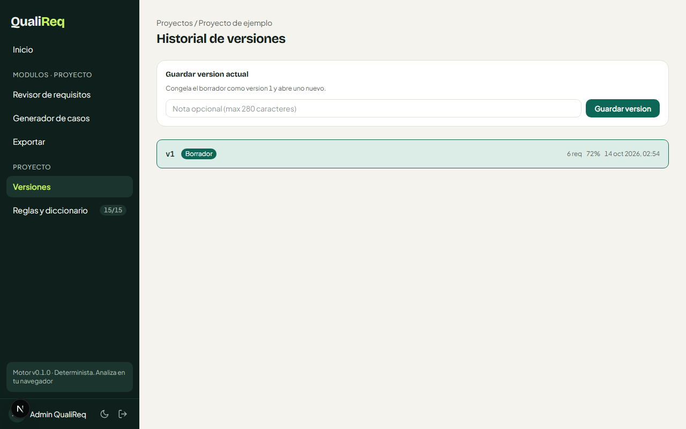
Reglas y diccionario de dominio
Este modulo muestra las 15 reglas del catalogo de analisis, cada una con su ID, severidad, tipo de deteccion (lexico, estructura, patron, heuristica, marca de revision) y atributo evaluado. Cada regla se puede activar o desactivar individualmente con un interruptor. El diccionario de dominio permite agregar terminos tecnicos del proyecto para que no sean marcados como ambiguos o subjetivos.
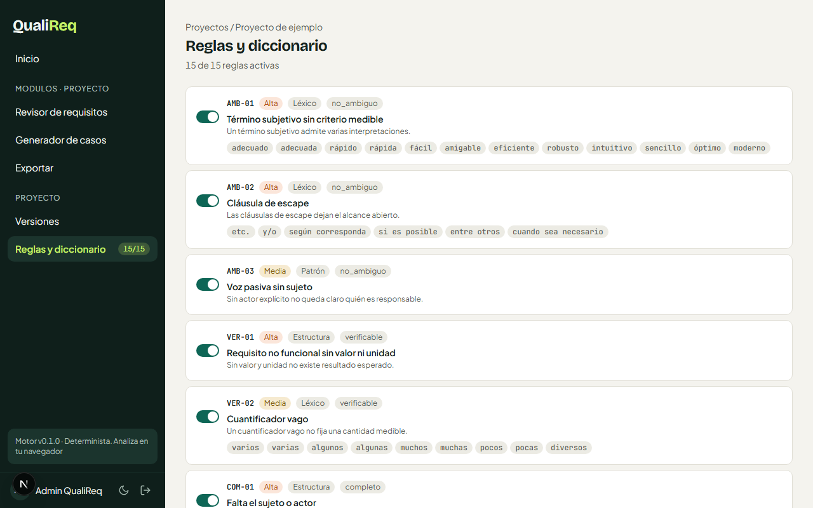
La vista completa muestra las 15 reglas y la seccion del diccionario de dominio al final de la pagina.
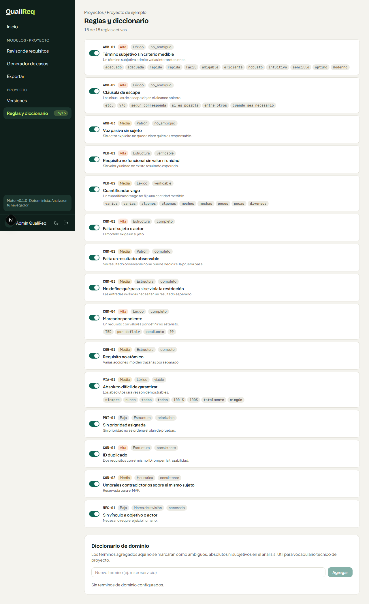
Resumen de pruebas automatizadas
La aplicacion cuenta con dos niveles de pruebas automatizadas que verifican su correcto funcionamiento.
Pruebas unitarias del motor (Vitest)
| Suite | Pruebas | Estado |
|---|---|---|
| Analizador de requisitos | 62 | PASAN |
| Correcciones (suggestFix, improve) | incluidas | PASAN |
| Generador de casos (BVA, EP, umbrales) | incluidas | PASAN |
| Exportadores (11 formatos) | incluidas | PASAN |
| Prueba dorada (golden test) | 1 | PASA |
Pruebas E2E de la aplicacion web (Playwright)
| Modulo | Pruebas | Estado |
|---|---|---|
| Login y autenticacion | 2 | PASAN |
| Pagina principal | 4 | PASAN |
| Revisar requisitos | 5 | PASAN |
| Generar casos | 3 | PASAN |
| Exportar | 2 | PASAN |
| Versiones | 3 | PASAN |
| Reglas y diccionario | 4 | PASAN |
| Navegacion | 2 | PASAN |
Total: 62 pruebas unitarias + 25 pruebas E2E = 87 pruebas automatizadas. Las 14 capturas de este manual fueron generadas automaticamente por el suite de capturas (Playwright).